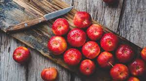

Red is one of the most vibrant and attention-grabbing colors. It's been shown to increase heart rate and stimulate appetite. And according to a study from the University of Rochester, seeing red can actually make you feel more aggressive.So why are apples red?The answer is simple: because that's how nature intended them to be.Apples are red because of a compound called anthocyanin, which is found in the apple's skin. Anthocyanin is a powerful antioxidant that helps protect the apple from damage. And it just so happens to be responsible for giving apples their characteristic red color.So next time you bite into a juicy red apple, remember that you're not just enjoying a delicious snack; you're also getting a healthy dose of anthocyanin!
this is a logical paragraph and very detailed and the descriminations are great，it use quotes to support the main idea odf why aplle are red and also point out the benefits of eating those apples --sallyzhao
春天的到来，意味着暖风和阳光的回归。天气转暖，万物复苏。一潭春水就像是春天的缩影，是大自然最美丽的写照。春水里有什么让人觉得宁静而美好呢？我想，那一定是它带来的清新、和平、生机勃勃。无论是波涛汹涌的海洋还是人间繁华的都市，只要有一方宁静而美丽的春水就够了。
描写的很细致生动，词句简洁句子通顺，没有错别字-用了第三人称视角描写了对于春天的景象详细的生动地描写。结构上为总分，有简入繁。-赵珈可
